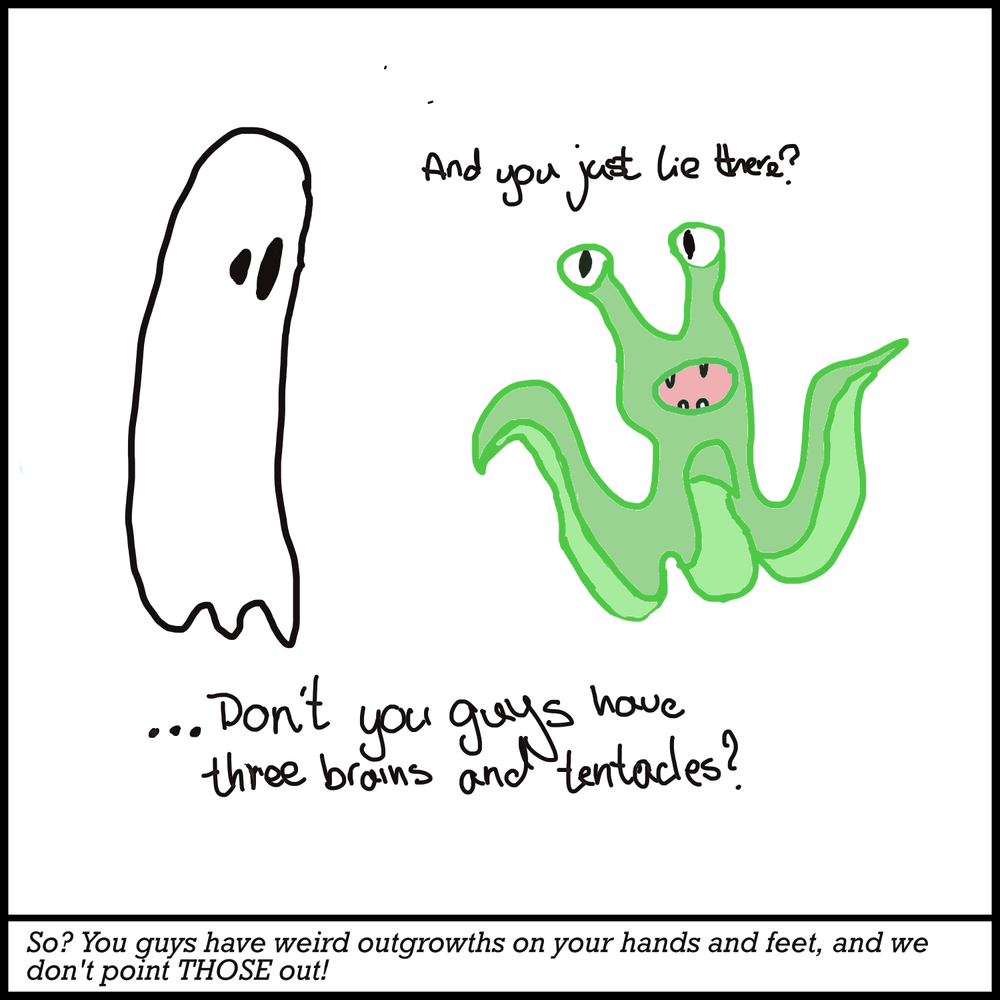
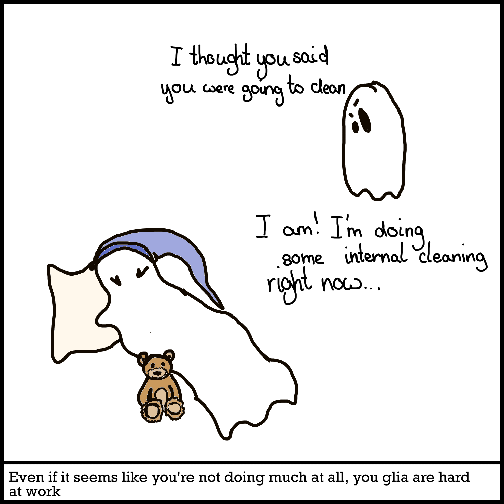
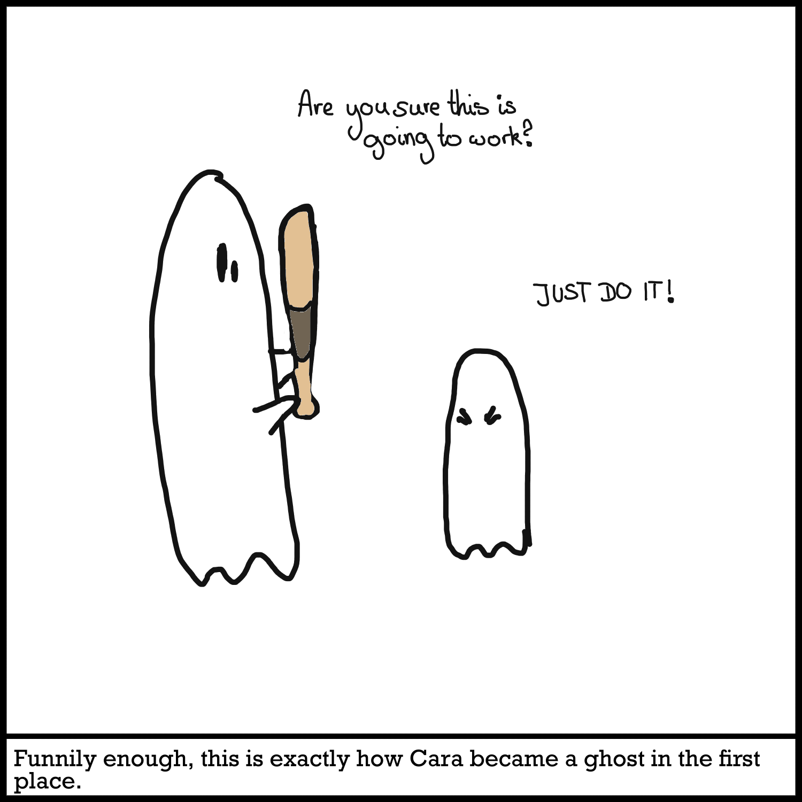
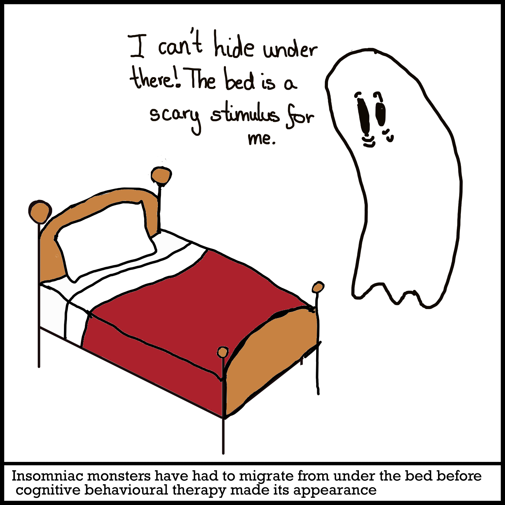
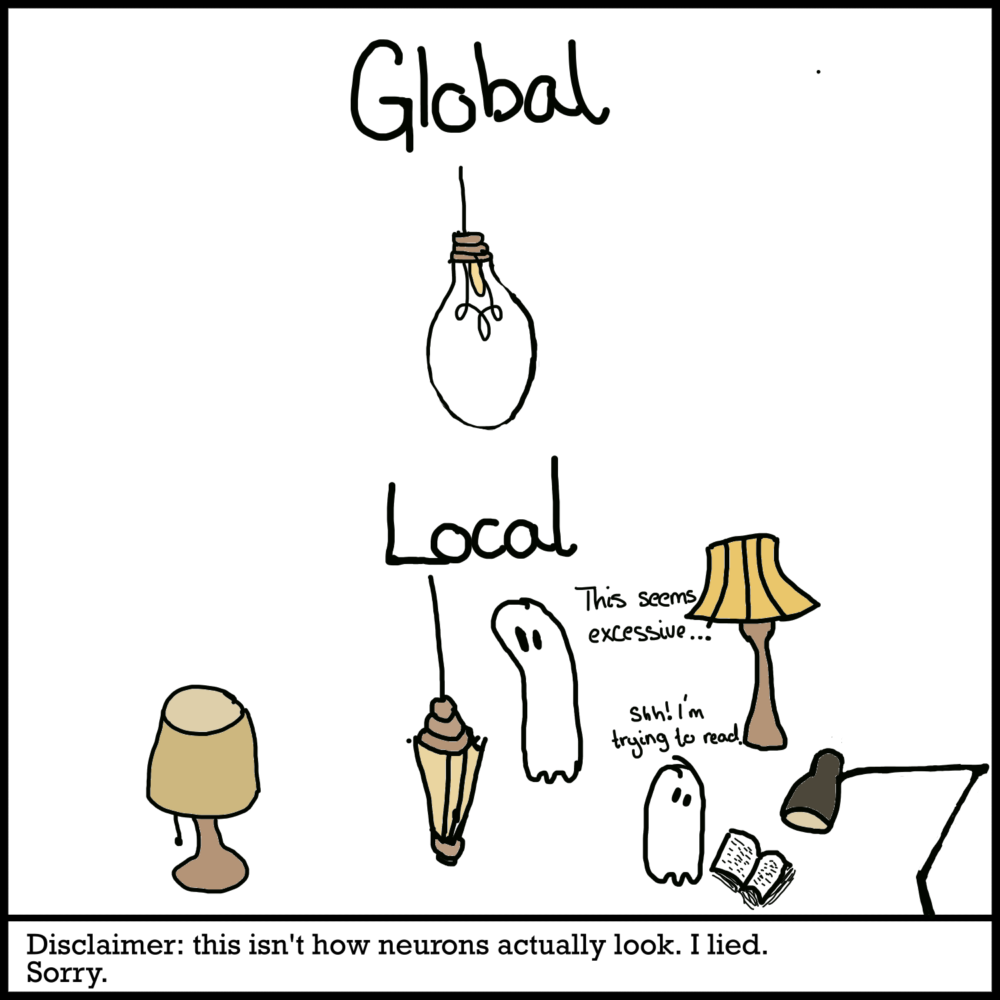
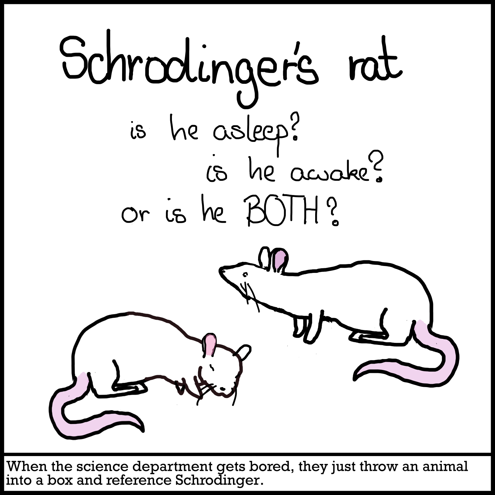

Sleep
To talk about sleep disorders, we first have to have a basic understanding of what sleep even is. That seems like such a basic question, right? I mean, it’s sleep! We do it when we’re tired and then we’re (ostensibly) less tired. Unless we can’t sleep, and then we just kinda float around the world with massive eye bags wondering if your professor would mind you just lying down on the floor of the lecture hall for a bit. Sleep is actually fascinating. I mean, what the hell even happens in the brain when we’re asleep? Why do we need to sleep to survive? Do we need to sleep to survive? Yes. Yes we do.
Why do we sleep?
If an alien were to come to Earth and see a person sleeping, they’d probably find the whole process incredibly strange. We lie in the dark for a third of our life, unable to move, find food, reproduce, or even escape from predators? And if we somehow disrupt this process, our thinking, our mood, our physical performance, and more is affected.
Unless sleep is incredibly vital to our functioning, we spend a hell lot of time putting ourselves at (seemingly unnecessary) risk. Shouldn’t evolution have stomped it out by now? Or, at the very least, we could sleep with just one half of the brain at a time, a mechanism called unihemispheric sleep which is used by e.g. dolphins, who need to surface periodically to breathe (Mascetti, Gian Gastone, 2016). Clearly, if evolution has still let sleep be, there has to be a whole lot going on behind the scenes. Sleep is implicated in a lot of different processes in the brain. It’s so important that practically every animal displays some form of sleep, including insects (Hartse, 2001)!

One of the first important tasks of sleep is to get rid of toxic waste in the brain. While we’re awake, our brain is doing a lot of work (although you often meet people who make you question the validity of this point). This means it’s very metabolically active. The processes of brain activity, all of the cognitive processes, laying down new memories, sensing your environment and responding to it, create waste products, which can often be toxic if they accumulate. Sleep thus allows these to be cleared by glial cells. Glial cells are non-neuronal cells in the brain that have a lot of different functions, and they form the glymphatic system for waste disposal (you know, like the lymphatic system, but with glia). The glymphatic system helps carry away waste products in the cerebrospinal fluid to the blood system in the body, from where it can then be excreted. Sleep aids in this by presumably increasing the flow of the fluid and also widening some of the spaces it flows through. The big waste product to know about is beta-amyloid; you might have heard of this before, as this peptide has relatively recently been implicated in neurodegenerative diseases such as Alzheimer’s disease. From here, we can go on to reason that if accumulation of beta-amyloid can cause Alzheimer’s disease and sleep clears the build-up of beta-amyloid, a lack of sleep can significantly increase your chances of getting Alzheimer’s disease (Eugene & Masiak, 2015).
But don’t worry! This isn’t to say that if you have insomnia, you’re going to get Alzheimer’s. If anything, this is proof that we’re getting closer to a comprehensive understanding of sleep and issues related to it. There’s a lot of worrying about sleep, and rightfully so - it’s a very important biological process, and most of our society seems built on ignoring this in favor of productivity. Simultaneously, being anxious won’t help you sleep, it’ll just stress you out. If you can’t sleep, that’s okay. Make yourself some hot chocolate, settle down with some music, or just lie down and close your eyes. A lot to do with sleep is psychological, and worrying about it doesn’t generally help (which, I know, easy enough to say). If I can’t sleep, I try to remind myself that I can still function well without sleep. Even just laying down is restful. You’ll be okay. So take a deep breath. Even a little bit of sleep is better than nothing. You’ve only managed to sleep two hours yesterday? Well, congrats! Your brain was still hard at work clearing out toxic waste products, reinforcing memories, and lots of the other functions of sleep we’ll look at in a bit. Make sure to try and cut out some time just to rest your eyes, even if you don’t fall asleep. If you’re up for it, we can continue looking through some more foundations of sleep science.
One aspect of cognition which sleep is incredibly important for is memory. Memory is divided into three major processes: encoding, consolidation and retrieval. A memory must first be created and encoded in the brain; we take the sensory information coming at us and store it in the brain for future use. However, at this point, the memory is a fragile thing. It can easily be forgotten if it weren’t for the next step, which is consolidation, i.e. strengthening and pruning the memory. Sleep is incredibly important for this, as we will elaborate on further. Lastly, the retrieval of the memory - something might happen that makes us recall the memory and we access it again (Rasch & Born, 2013).

Memories are built by changing synaptic connections in the brain. The synapses and neurons themselves are remodeled. A lot of different brain structures are involved in memory formation and consolidation. This consolidation involves revisiting the new memories to physically strengthen the synapses that encode them. Why do we do this during sleep? One big reason is probably so that the encoding of new memories does not interfere with the consolidation of older ones. If we were continually hallucinating and remembering what had just happened, we probably couldn’t focus on the present (Diekelmann & Born, 2010). Behavioural studies have shown that sleep benefits both procedural memories and declarative memories. Compared to subjects who stayed awake after a period of learning, whether that be learning information (e.g. a set of words to remember) or a motor task (e.g. tapping a specific sequence into a keyboard (Stickgold, 2005)), the subjects who went to sleep for the same duration of time that the control group stayed awake had significant improvements in their ability to recall the memories (and in the case of the sequence they would tap into a keyboard, improved speed and accuracy).
Alongside consolidating memories and clearing waste products, there are many other hypotheses we currently hold for further functions of sleep, such as clearing ‘unnecessary’ memories to remove clutter and facilitating neuronal migration (Patel et al., 2022). Alright, that’s all well and good. But how does it even work? I mean, when we go to sleep, we enter an entirely different state of being without any drugs or blunt force trauma (hopefully)- and I don’t even know how our brains do it!
How does sleep work?
You’ve probably already heard of REM sleep and know that it’s the stage of sleep where you dream. It’s actually one of four sleep stages, of which the other 3 are NREM1, NREM2 and (shocking) NREM3. NREM stands for non-rapid eye movement. You don’t cycle through everything once, but rather go through all four stages 5 or 6 times in your sleep, with each stage lasting approximately 90 minutes, with progressively less time spent in NREM and more in REM (Patel et al., 2022).
Sleep is regulated by your circadian rhythm, the rhythm your body follows as set by changes in the light and the dark. An area in the hypothalamus called the suprachiasmatic nucleus (SCN) shifts the normal rhythms of your body to fit with the shifts between the day and the night (Patel et al., 2022). This system (and vision in general) depends on proteins called opsins. These are found in photoreceptor cells in the retina and help convert light into an electrochemical signal that your body can recognize (Terakita, 2005). For regular vision, this essentially works like this:
A specific opsin called melanopsin is in charge of this. And here’s a fun fact - melanopsin doesn’t depend on the classic rods and cones in your eye to transmit this information. Why is this so cool? Because it means that even people born with degenerating retinas, even once it’s practically all degenerated, still have function regulation of their sleep cycles by light! So even though someone might be functionally blind, unless there is significant damage to the whole eye or the optic nerve, their body still knows whether it’s light outside (Palczewski, 2012)!
These are some of the primary brain structures involved in sleep:
The two big neurotransmitters involved in the onset of sleep are adenosine and GABA. Both are inhibitory neurotransmitters, which means they act as depressants (like alcohol! But please don’t take this to mean that alcohol will make you sleep better. Just because it also shuts down certain processes in the brain doesn’t make it suitable to promote sleep. That’s like saying getting hit on the head by a baseball bat and falling unconscious is a great way to get some rest).
GABA is released by the hypothalamus and inhibits regions of the brain promoting wakefulness. Adenosine is a nucleoside that builds up in your body while you’re awake. ATP breaks down in the brain into adenosine. Adenosine exerts ‘sleep pressure’ as it builds up, inhibiting arousal in the brain, and is then metabolized while we sleep. Caffeine is actually an adenosine receptor antagonist, blocking the receptors which adenosine would bind to and thus making us feel as if we don’t need to sleep. However, when caffeine breaks down, we might feel a ‘crash’ because further adenosine has accumulated in the meantime (Reichert et al., 2022).
There are many neurotransmitters involved in wakefulness, including acetylcholine (ACh), noradrenaline (NA - another name for this is norepinephrine, NE), (DA), serotoning (the short name for this is unexpected. It’s not SE or SO or ST, but 5-HT, which stands for 5-hydroxytryptamine) and orexin (also called hypocretin) (Patel et al., 2022) . That’s a lot of names suddenly being thrown at you at once. Don’t worry, this isn’t a test, you don’t have to remember these. If you ever get confused, go check out to glossary or contact me for questions. This is just to illustrate the complexity of sleep and sleep disorders, and because issues with these neurochemicals have been implicated in certain sleep disorders. Understanding the pharmacology behind what induces sleep and what induces wakefulness can obviously be incredibly important for a lot of reasons, such as understanding and treating sleep disorders or predicting the side-effects of certain drugs.
One example of a sleep disorder that we now know can often be attributed to issues with a neurotransmitter system is narcolepsy. Narcolepsy is a rare disorder that makes it hard for someone to regulate their sleep. They might find themselves falling asleep during the day or feeling incredibly drowsy as they go about their usual activities. They might experience sudden muscle weakness during the day, collapse, hallucinate, and have erratic and frequently interrupted sleep. A major stride forward in a possible therapy for narcolepsy was the discovery of orexin in 1998, and the subsequent realization that narcolepsy was caused by a lack of orexin-producing neurons in a part of the hypothalamus, probably due to a genetic abnormality (De la Herrán-Arita et al., 2011). There’s also evidence for an autoimmune reaction causing loss of orexin-producing neurons (Mahoney et al., 2018). Orexins regulate wakefulness and REM sleep. As REM sleep is the portion of your sleep where you dream, poor regulation of this can lead to dream-like experiences and hallucinations while the person is awake. The reason behind the sudden muscle paralysis due to strong emotions, called cataplexy, is still relatively unclear. The current working hypothesis is that orexigenic neurons inhibit cataplexy normally. Additionally, they also serve to excite serotonin neurons, which typically block paralysis pathways during wakefulness. However, when there is a loss of orexigenic neurons, they can no longer inhibit cataplexy or excite serotonin to do so as well, leading to the same muscle paralysis that occurs during sleep to happen while we’re awake (Zhou et al., 2022).
What about insomnia?
Insomnia is the most common sleep-related issue. It’s often chronic, and is defined as difficulty falling asleep, poor quality sleep and frequent awakenings. Often, people with insomnia will also perceive themselves as having slept far less than they actually have, contributing to feelings of distress (Buysse et al., 2011). Since insomnia is so common and can be incredibly detrimental to quality of life, many models of insomnia have been proposed, both psychological and neurobiological. Let’s look at a few, as described in a paper by Daniel J. Buysse and others :
Psychological models of insomnia
- Diathesis stress model: This model primarily focuses on a love of alliteration. Spielman et. al talk about the three P’s: the Predisposing,
Precipitating and Perpetuating factors of insomnia.
Hang that up in an elementary school classroom, I say! I don’t know about you, but we had the 5R’s: respect,
responsibility, risk-taking… I’m blanking. Recycling? Racism?
Either way, the 3 P model discusses the: a) predisposing factors (Oh no, I’m genetically predisposed to insomnia. It’s cool. I’m sure it’ll be fine) b) precipitating stressors that push you over from the possibility of getting insomnia to actually having insomnia (Gosh, I have to stay up late to finish coursework but also wake up at 6am for class and I’m tired and worried that the spot on my leg that my flatmate swears is a birthmark is actually melanoma) and c) perpetuating factors (I have to get enough sleep this time so I’m going to be in bed from 8pm, but I’m so stressed about getting enough sleep I’ll just lie awake and worry for 9 hours and my bed will seem even more like a place of anxiety than one of rest). The model doesn’t really account for specific neurobiological mechanisms behind it, but it serves as a broad basis of why insomnia happens - and can serve as a basis for a broad explanation behind a lot of psychiatric issues in general (Spielman et al., 1987).
- Cognitive models: insomnia are so worried about sleep that it leads to emotional distress and sympathetic nervous system activation (the
‘fight or flight’ system), plunging the individual into a state of anxiety. This is theorized to lead to the individual
diverting their subconscious attention to both their body and the environment for ‘sleep related threats’. If they feel
terrible, they might latch onto this as proof of ‘Aha! My sleep is poor and I’m suffering as a consequence.’ However,
because the body is in such a state of anxiety and because the individual is monitoring every little thing, of course
there will be something to prove that! This hyper-focus on the smallest changes in functioning will mean the person
likely over-estimates the impact of their sleep deficit.
If we think back to the 3Ps - while this model describes the perpetuating factors, it doesn’t describe the predisposing
or precipitating ones. Maybe a more biological view of it will help! (I’m biased, I can’t help it)
- Neurocognitive model: Perlis et al. builds on the diathesis stress model, but brings in a little bit of biology as well. In a psychobiological model, insomnia first comes about in the early stages because of a failure of the normal neurobiological mechanisms to inhibit wakefulness. This can occur as part of a fight-or-flight response, with the body's reaction to a real or perceived stress being to prevent the person from falling asleep. This should dissipate after the threat leaves (say, after you finish a test and no longer have to worry about it), but this is where the psychology comes into play. The very act of cognition can cause someone to not fall asleep. This is a very fancy way of saying someone is basically thinking about it too much. Once you're stressed and can't sleep, suddenly all you can think about it falling asleep and how much you need to do it. Ironically, this probably prevents you from doing that. First of all, Michael Perlis and his co-authors write, there is the fact that the act itself of focusing prevents that disengagement that is necessary for sleep. Secondly, now that you're focusing on something, your body expects action. The purpose of attention as a whole, in a very basic animal way, is to respond to the thing we're observing, causing your body to again move away from sleep and towards wakefulness because hey, what if we get mauled by a wild animal the second we fall asleep now since we didn't deal with the pressing matter of whatever was causing our attention systems to turn on? This again clashes with the desire to sleep. Third, the person then focuses super hard on falling asleep now - which just gets the cycle going and they feel even more alert!  This model references chronic insomnia being caused by engagement with maladaptive coping strategies (e.g. the ‘safety behaviors’ referenced above) and discusses the cognitive arousal as a factor in continuing insomnia. It primarily focuses on cortical arousal. This doesn’t mean that your cerebral cortex is particularly turned on - or, well, it is, just not in a sexual sense (I'd hope). Arousal in a physiological sense is the state of being awake or alert. The study discusses “high frequency EEG activity” being found at sleep onset (Perlis et al., 1997b). Huh? An EEG is a recording of electrical activity in the brain. Sleep is characterized by low-frequency EEG activity, thus high frequency EEG activity is not particularly conducive to a sleep state. An individual with insomnia having high frequency electrical activity as measured by EEG might mean their brain is still aroused and alert when it should be shutting down. Cortical arousal is also associated with conscious perception, so activation of these brain regions might cause this mismatch between actual sleep time vs perceived sleep time. If someone is going to sleep but their cortex is still in an aroused state and they can thus still consciously look at their environment and take information in, it probably doesn’t really feel like sleep.
There are a few paradoxes in insomnia - one of these is that people with insomnia tend to think it takes them much longer to fall asleep and that they sleep less during the night than they actually do. So what the hell is going on? Why do people with insomnia not recognize that they’re asleep? Have they managed to convince themselves that they’re bad sleepers so thoroughly that they just don’t believe they slept anymore? We’re getting to that, don’t worry. And hold onto your hats, because the ideas proposed are hella funky.
Different models of insomnia naturally lead to a variety of treatment ideas. One concept, detailed by Richard R. Bootzin, is the stimulus control model and the subsequent treatment method. It hinges on the idea that sleep is a conditioned response. Basically, we become taught that our bed, night, pajamas, putting our teeth in the glass of water on the nightstand, whatever our strange routines consist of, all mean sleep. Sleep becomes a natural response to the environment. However, if this changes and perhaps we start to view the sleeping area as a place of frustration and anxiety rather than one of rest, we might start to struggle with insomnia. The treatment thus attempts to restrict the stimulus environment to one of only sleep - no other activities in bed except sleeping. Clearly, Bootzin knows how to have some fun.
The big global/local divide
We’ve gone over some basics of sleep already, but something we have to emphasize is how much we still aren’t sure about. One of the things we might still question is this: Is sleep centrally regulated, or is it local? To explain that further: many models of sleep view it as a whole-system operation. That’s how most of us typically think of sleep as well - a switch flips off and we go to sleep. There’s a lot of different systems at play for sure (adenosine, our circadian rhythms controlled by light input, specific neurotransmitters turning off while others turn on), but we think of it as something that involves the whole brain. Either the whole brain is asleep, or it’s not. It’s an EITHER/OR situation. Or is it? (I love a good ‘or is it’ moment).
Some evidence suggests that sleep might even be a local property of individual neurons or groups of neurons. So a single neuron can be asleep while the rest of them are awake? Although the ‘top-down’ idea of sleep is useful, it doesn’t explain everything. For example, animals with lesions in their brain still sleep, even if those lesions are in centers of the brain that regulate sleep. This implies that sleep might be an intrinsic property of some neurons. While it’s probably not accurate to say that a single neuron will be asleep while the rest are awake, it’s also not… entirely wrong? Sleep factors such as adenosine or a molecule typically produced in response to inflammation called TNF-alpha promote activity in neurons that causes sleepiness, and this is then propagated as a signal to other neurons and goes on to promote sleep in the system as a whole. This inflammation signal is a local, use-dependant phenomenon (Krueger et al., 2019). Neuron clusters that were cultured in the lab could have sleep-like properties manifested in TNF-alpha was added, despite them not being attached to sleep regulating centers (or, you know, the rest of the brain) (Rockstrom et al., 2018). If you’ve studied some form of immunology before, you likely recognize TNF-alpha as one of the big cytokines, molecules that are released to stimulate your immune system. Turns out they’re pretty versatile in their functions! Truly a Renaissance protein. Therefore, while sleep centers and arousal centers both globally regulate sleep, sleep is still fundamentally an intrinsic property of local neurons or clusters of neurons. Some authors have thus even argued that sleep is a “statistical phenomenon” (D’Ambrosio et al., 2019); rather than it being ON/OFF, sleep as a whole occurs when enough neurons enter into a sleep-state. Let’s make use of a terrible analogy to get what I mean. Imagine a dim room. You’re trying to make out a book you’re reading. The idea of sleep as a fully global phenomenon is like having one big light with one switch - you turn it on and it illuminates the whole room. You can’t have some illumination, you either have it or you don’t. But maybe you have a whole lot of lights and they each have their own switch. You have to flip enough switches for the room to be illuminated. Maybe you’ve even rigged up some system where flipping one switch will tug on a rope that flips another switch that drops a domino that flips a third light switch that pulls on a rabid dog which goes and flips the next cat-scented switch which triggers a gun to fire that … 1
1If you rig this up, send me a video
This isn’t to say the central/global and the local mechanisms of sleep are mutually exclusive. It might be that the growing proportion of ‘asleep’ neurons triggers a switch that causes central sleep-regulatory centers to cause essentially the whole brain to go to sleep (Buysse et al., 2011). Signaling pathways (e.g. adenosine and TNF-alpha which we mentioned, and others such as nitrous oxide or cytokines, all of which act like chemical messengers) act on neurons to change their properties so they somehow enter a sleep-state. Some parts of the brain may be more susceptible to these paracrine signaling pathways, or their inputs might get ‘tired’ more easily, which might lead to what we see as signs of sleepiness and local sleep. One example is a study that found that the locus coeruleus neurons projecting to the prefrontal cortex (which, as I probably mentioned before, deals with a lot of executive cognitive functions) fatigue during prolonged wake-states (Bellesi et al., 2016). Since the prefrontal cortex deals with executive cognitive functions and neurons innervating it tire easily when awake, this might help explain the ‘symptoms’ that we tend to associate with sleep deprivation, such as impaired cognitive function. I mean, you don’t tend to think ‘Oh boy! I only slept for 2 hours last night, I sure am excited to test my working memory on an exam and then proceed to regulate my emotions while a customer yells at me in my retail job where I make barely minimum wage’. To be fair, I don’t think you’d be saying that even if you slept three days.
So why am I going on another tangent? Primarily, it’s because I’m terrible at organizing and planning my work because I do it. But also, understanding some concepts behind local sleep and that sleep is not, contrary to what we all tend to think, a necessarily fully ‘whole-brain’ phenomenon, can help us understand some aspects behind insomnia. The ‘hyperarousal’ that occurs during insomnia can be seen from a neurobiological perspective as not necessarily a global state, but possibly a dysfunction of a certain part or component of the brain (Buysse et al., 2011). Maybe it’s not your whole brain keeping you up. Maybe some neural circuits just aren’t very good at listening to their bosses and to their own fatigue cues and stay awake when you really, really want to sleep instead.
The Insomnia Switch
Before we get started, one thing I do want to emphasize here is that these are theories. I like these as theories a LOT, but that doesn’t necessarily mean it’ll end up explaining everything correctly. As you’ve probably already encountered if you read about cortical folding in the ADHD section and saw the axon-tension hypothesis, theories are wrong pretty often. That’s, like, the whole point behind them. Now that that’s out of the way, let’s see about these models! There’s two models I want to briefly talk about, one of which is called the “Cano-Saper” model but which we’ll call “the indecisive switch” (a bit of a redundancy there am I right haha), and the other is a model proposed by Daniel J. Buysse and co-authors, which we’ll call the… “local sleep” model? That’s not very exciting. We’ll call it the “Mega-ultra-3000-sonic-boom-hyperspace-neuroscience” model. Or maybe the “split brain” model. To illustrate them using the (bad) switch metaphor: the Cano-Saper model assumes there's one switch going haywire. The Buysse model thinks there's a lot of switches, some switched ON, some switched OFF.
The tl;dr is that the “indecisive switch” model proposes that insomnia occurs because the big switch, the one that moves the brain from an awake state to a sleep state, is a bit faulty. Instead of being on one side, then the other for 8 hours, it flips between them as if a bored kid in school was playing with it. This is in a way similar to narcolepsy, which we mentioned previously, where deficiency of orexin/hypocretin causes the switch to go a bit crazy, as orexin/hypocretin typically stabilizes and regulates the sleep/wake and REM/NREM switch (Sorensen et al., 2013) In a 2008 study on (you guessed it) rats, Cano and colleagues stressed out rats. The main reason behind this experiment was that Cano et al. really hated those specific rats. A bonus was that they could then also study stress-induced insomnia. If you’re wondering, like me, how you stress out a rat, the scientists apparently did it by switching their cages, specifically into cages that had been previously occupied by a different male rat. This was a stressor because rats are notoriously homophobic and can’t stand to be in the same cage as another male rat.
The benefits of using the ‘cage-switch’ method was that this was not a fear-related stressor that would set off the amygdala and it didn’t use drugs such as caffeine, neither of which would mimic how stress-induced insomnia works in humans. Previously, interactions between ventrolateral preoptic nucleus (a collection of neurons in the hypothalamus that releases inhibitory neurotransmitters) and the arousal system, a pathway which ascends in two branches through the brain and promotes cortical arousal and wakefulness (Arrigoni & Fuller, 2022) For more information about the specifics of the arousal system, you can read this article about the neurophysiology of sleep and wakefulness. During sleep, the ventrolateral preoptic nucleus (VLPO) inhibits the arousal system, which in turn down-regulates (i.e. reduces or suppresses) the VLPO when it’s time to be awake. So we’ve found our switch! Now if we assume that insomnia is caused by something wrong with the switch, we should probably look into this system.

In her model, Georgina Cano and her group hypothesize that the issue comes because neither the VLPO nor the arousal system sufficiently turn the other one off. In an insomniac, the VLPO, which typically leads to sleep, will be activated because the circadian system is saying “Hey, it’s dark outside again!” and because adenosine exerts sleep pressure. However, there is so much stress that the arousal system is being continuously excited by the limbic system. In the rats, this was because of the cage switch - in humans, this might translate to other stressful phenomena, such as being worried about starting a new job the next day, or even ironically being worried about getting enough sleep. Now that the arousal system is being so intensely excited, the VLPO can’t really turn it off. At the same time, the arousal system can’t turn off the VLPO because there’s a strong pressure from sleep systems such as the circadian rhythm. This leads to a strange stand-off; the VLPO and the arousal system both aren’t willing to cede to the other. They can’t agree on whether they’re awake or asleep. In Cano’s rat experiment, this led to expression of Fos (a marker of neuronal activity) in the brain’s sleep circuits and in the cortex and arousal system (Cano et al., 2008). Like insomniacs, the rats also still had high-frequency EEG activity during nREM sleep; as high-frequency EEG activity is indicative of cortical activity and thus of sensory and cognitive processing, it might not really feel like regular sleep. Even though other parts of their brain seem asleep, they haven’t put their cognitive functioning to sleep. So were they both awake and asleep? Cano and Saper came to the conclusion that the explanation behind this strange sleep/wake dichotomy is the “flip-flop switch”. The wake-promoting and the sleep-promoting neurons are in a constant battle for dominance. When one side gets a little bit of leverage, the switch flips over to that side. When the other side gets leverage, it flips back. For more reading about this model, you can check out their paper: Sleep State Switching.
This fits with the psychological models of insomnia we’ve discussed, which talk about the stress/hyperarousal of insomnia caused by internal and external factors. Another interesting conclusion from this I’d like to point out about this model: rather than a disorder of being unable to turn sleep on, insomnia may be due to inability to turn wakefulness off. That probably seems like the exact same thing, or at least an unnecessary distinction, but it isn’t really! As we’ve seen, sleep isn’t necessarily the absence of wakefulness. We tend to think of it as just the opposite of being awake and doing fun shit, of something we do unconsciously that doesn’t really serve much purpose except giving us a little reprieve from the constant onslaught of life. Or whatever. But sleep does a hell of a lot and is triggered by its own cues, not just by the turning off of wakefulness cues. It’s therefore not just the absence of wakefulness, but a separate process in its own regard. This distinction is important, especially if we consider how we might treat it. The Cano-Saber model above would suggest that instead of treating insomnia by focusing on turning the sleep system ON (e.g. using benzodiazepines, which enhance the work of the inhibitory neurotransmitter GABA) but by turning the wake system OFF (a number of methods will likely be proposed for this, such as antagonists for corticotropin releasing hormone, a hormone involved in the body’s response to stress (Cano et al., 2008))
The “local sleep”/”Mega-ultra-3000-sonic-boom-hyperspace-neuroscience”/”split brain” model hinges on what Buysse describes as “simultaneous and regionally-specific waking and sleeping neuronal activity patterns”, i.e. parts of your brain exhibit sleep activity and others wake. This is similar to Cano’s model, except instead of being one switch rapidly flipping from awake to asleep based on thousands and thousands of neurons struggling to get the upper ground, the idea here is that there’s a bunch of switches and some are flipped awake and others asleep. In this way, the rats (and humans!) can technically be both awake and asleep at the same time. They propose that the co-occurrence of sleep and wake states in different parts of the brain doesn’t necessarily cause a big switch over to one side and then another, going absolutely haywire, but can mean that someone is, quite literally, half-asleep.
In Cano’s rat experiments, the stressed insomniac rats (a great couple of words to put together) had indications of sleep-inducing structures and also markers of cortical arousal. In humans, this is likely analogous to how insomniacs might misrepresent their levels of sleep. Researchers see that there’s indications of them being asleep, but the insomniacs will nevertheless march up and say “absolutely not! I would know if I fell asleep, I’m not stupid.”. Are the researchers using faulty equipment? Are the insomniacs lying? I mentioned this paradox already, and it seems like only one side has to be lying or at least misunderstanding something, but what if both the insomniacs and the researchers were correct? What if the issue wasn’t that the insomniacs were sleeping and felt they were awake, but that they were awake and asleep at the same time?
To sum up...
There’s a lot we still don’t know, and a lot I haven’t even touched upon, because the body is complicated and terrible and weird and awesome. However, there’s a lot of cool research being done. Sleep and sleep-disorder research is very interdisciplinary. There’s genetic factors that might predispose you to developing insomnia, environmental factors that cause you stress and lead to your brain responding in a myriad of strange ways, flip-flopping, flop-flipping, sleeping, waking up, both and neither. We have to look into both neurobiological and psychological causes behind insomnia, because it’s an issue of both (and genetics, but I just find that slightly less interesting. Hey, take it up with my manager if you don’t like it). If we consider treating insomnia, we might have to lower the levels of arousal and stress pharmacologically to alleviate the symptoms and anxiety over short-term and allow someone to actually be in a state where they can start addressing the psychological and environmental issues which might be causing, or at the very least perpetuating, insomnia. But what do I know? Psychologists might also come up with some cure-all for all sleep issues in my lifetime. Either way, sleep science is funky as fuck. Check out the references if you want to do some more reading, or go out on your own to do some research, and contact me if you find anything that’s super interesting (or even mildly interesting. Like a 6/10 will do. A 5 maybe if it’s well illustrated. A 4 if it’s funny. I have low standards).